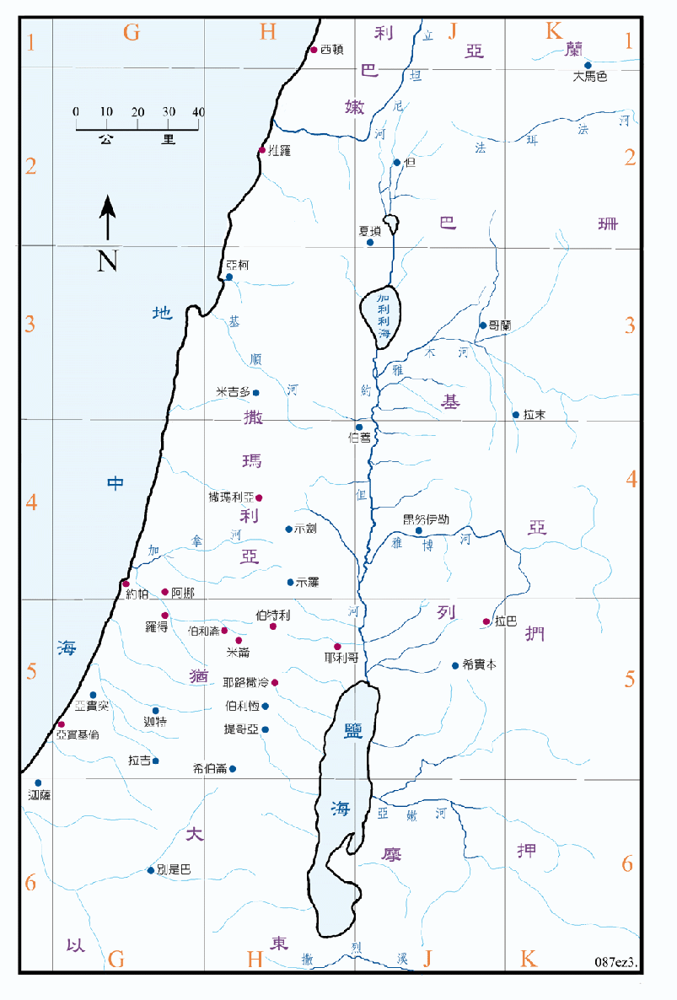

在 722BC 北国以色列被亚述所灭之后，将以色列人掳到哈腊、歌散和玛代等地，又从巴比伦、古他和哈马等地移民来到撒玛利亚代替以色列人，在设巴萨归来前之的七、八十年间，外来的移民和留下的以色列人已经混合成了撒玛利亚人，他们居住犹大省以北的地区。因他们与外族通婚，被犹大人视为不洁，而且又阻碍建殿，故两族之间的仇视日渐加深。
南国犹大在北国灭亡之后，一直受到亚述和巴比伦的压迫和攻击，在605BC 被巴比伦掳去一批精英，在586BC 耶路撒冷被攻破，北国被巴比伦灭亡之时，犹大人又被掳去巴比伦，犹大地几已成荒凉无人之地，以东人就乘虚占领了南方，后来成为拿巴天人和以土买人的领土。